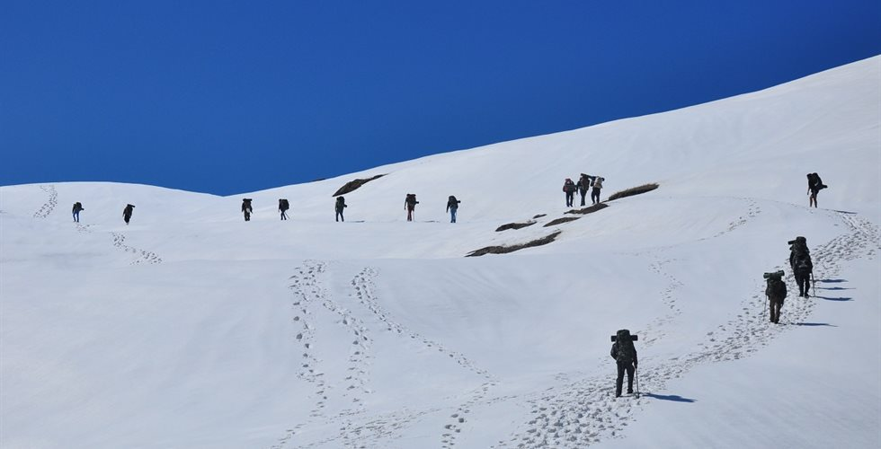
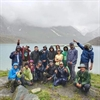
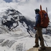
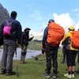
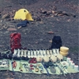
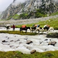
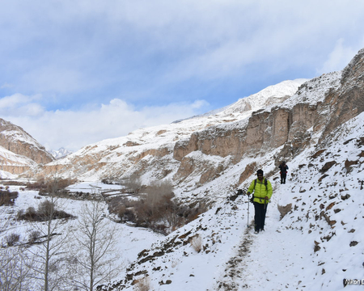
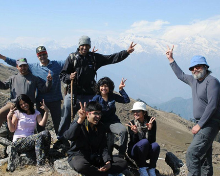
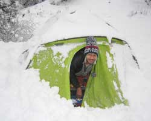

Panwali Kantha Trek
Available Batches
Brief Description

Brief Itinerary
Detailed Itinerary
Day 1
Make your way to Ghuttu (1,635M)
Distance: 200 kms
Duration: 6 hour drive
If you have signed up with Bikat for a drive from Dehradun to Guttu, our day starts early. All of us assemble at the meeting point by 7 in the morning so we can start our long drive up to Guttu – a farming village in the Tehri district of Uttarakhand. Although there’s nothing more on the agenda for today other than the 6-hour drive and settling into mountain air, it is better to leave as early as possible for two reasons:
One, so we can reach as early as possible and give our bodies enough rest for what’s coming the next day. And, two, roads on the mountains are unpredictable and it is always better to account for delays when we start. It is also better to reach before it gets dark.
Guttu is a fairly big village with lush green mountain faces cut out neatly in geographical shapes for farming which happens to be the main economic activity of its inhabitants. On our way up to this village which is 30 kms from Ghansali, we cross the Tehri Dam which is built on the Bhagirathi River and is the tallest dam in the world. It is quite an engineering wonder and a sight to marvel at. The roads all the way up to our trailhead are smooth. The streets of Guttu offer a lot which can be explored – the small markets, its many temples, the chai dhabas and the overall high-altitude village life is all a whiff of fresh air.
Tonight we stay indoors in a guesthouse.
Day 2
Ghuttu (1,635M) to Gaurmanda (2,525M)
Distance: 7-8 kms
Duration: 6-7 hours
Our first day of the trek and it’s quite a heavy day since we are gaining about 900M of elevation already across a distance of 7-8 kilometers. The thick forests of Oak and Rhododendrons do their bit to ease your mind off the long distance for today. It is a pleasant walk through jungles which are full of colour over a gradual ascent which ultimately brings us to our campsite, which also is in the middle of the jungle, at 2,525M. The trail is broad all the way through and it curves slowly up leading from one bent in the forest to another with a distant view of the high-altitude villages and green fields on the opposite side.
Day 3
Gaurmanda (2,525M) to Panwali Top (3,400M) via Pobhari (2,945M)
Distance: 7-8 kms
Duration: 7 hours
Today is just as long as yesterday with just as much of an elevation gain taking us to the highest point of the trek at Panwali Top which brings us to some majestic views of the majestic mountains in the region. It is a gradual ascent through the forest all the way up to Pobhari at 2,945M. The trail flattens out for a kilometer from here before turning into a gradual ascent again which brings us to Dophand. By the time we reach Dophand, we would have already covered 3 kms for today and crossed a plethora of shepherd huts which lie vacant waiting to welcome strangers as well as familiar faces. From Dophand, the trail becomes flat for 2 kms and the forest opens up to accommodate a grander view of the valley and the mountains around. The last 300M of ascent for today is relatively steep and continuous. The top is marked by a multitude of stone temples which are frequented by the locals in the surrounding villages. The whole setting provides for a calming environ – the feeling amplified by the fact that there is no one else on the trail other than you since it is a trail not frequented by many.
From here, our campsite lies after a small descent of 165M at 3,235M. Today’s campsite rests just at the edge of the jungle with shepherd huts scattered on one side. It is likely to be extremely cold here especially after the sunlight recedes.
There are no water sources on the way. Carry enough water from the campsite to last you the entire day.
Day 4
Panwali Top (3,400M) to Gaurmanda (2,525M)
Distance: 8 kms
Duration: 6 hours
Today, we head back over to the top early in the morning because that is when the skies are clear and the entire mountain range, which is the major highlight of this trek, comes fully into view as the sun hits its first ray of light on the highest of the peaks leaving a deep golden crown over their heads. The massive meadows we cross to get to the top are nothing short of magical. Each side presents a different set of high peaks, each equally splendid. You can spend hours trying to name each one of them accurately and studying their many forms - their crags, ridges and slopes, each one so distinct and so different giving them all a unique personality. After spending some time on the top, we trace our steps back through the thick jungles of oak and rhododendrons to get to our campsite – our old friend Gaurmanda!
Day 5
Gaurmanda (2,525M) to Dehradun (650M) via Ghuttu (1,635M)
Distance: 8-9 kms (trek) + 200 kms (drive)
Duration: 3-4 hours (trek) + 6 hour (drive)
On the last day of the trek, we trace our steps back through the same route to head down all the way to Guttu, collect our sacks and wait for our ride back to Dehradun. Expect to reach Dehradun by late evening.
What's Included
- Meals during the trek. Three Meals a day
- Forest Permits/Camping Charges/Permits, Trek Permit Fee/IMF Permission (Upto the amount charged for Indian nationals)
- Camping tents, Temp rated sleeping bags, mattress
- Safety Equipment includes static rescue rope, seat harness, carabiners, pulleys
- Mountaineering course certified Trek Leader with Wilderness Emergency Responder & Rescue. course from NIM Uttarkashi
- First Aid Certified Local guide, cook, helpers
- Porters or mules for carrying common Supplies
What's Not Included
- Meals during road journeys, if any
- Any kind of Insurance
- Any expense of personal nature
- Any expense not specified in the inclusion list
- Carriage of personal rucksack
- Meals during Hotel Stay, if any
- Transportation from Dehradun to Ghuttu and back to Dehradun
Are you Eligible for this Adventure?

BRS Level Required
Packing List
Frequently Asked Questions
This trek is apt for the first-timers. Those coming for the first time should prepare and read extensively about the trek. A basic knowledge about how to use a sleeping bag, toilet tents, sleeping tents, and mountain mannerisms will come in handy.
- How to choose a right rucksack: It is essential that you choose a right rucksack for the trek since you are going to carry it all the time while trekking. Make sure you don’t make these common mistakes while buying a rucksack.
- How to pack a rucksack: Trekking in mountains become more fun when your rucksack is well-organized. It also makes it easier for you to carry without being much load on your shoulders. Follow the guidelines on how to pack a rucksack.
Fitness Benchmark
- Jog/Run for 3 Kms in 30 mins and
- Hold your breath for 20 seconds
March- mid April
Here is your checklist for this trek. Make sure you pack all these items for a comfortable trekking experience.
- Trekking Gear
- A rucksack with rain cover
- A water bottle or a hydration pack
- A Hand/Head Torch with spare batteries
- UV protection Sunglasses
- Clothing
- Quick Dry Warm lower or Track Pants- 1
- Full sleeves T-shirts/ Sweatshirts- 1 or max 2
- Thermal Bodywarmer Upper & Lower- 1
- Fleece jacket- 1
- Full sleeves sweater- 1
- Rainwear (Jacket & Pants) -1
- Woolen sock - 1 pair
- Cotton Socks- 1 or 2 pairs
- Undergarments - 1 for every day 3 days of trekking
- Pair of Warm Gloves - 1
- Woolen cap - 1
- Sun cap or Biker Scarf for protection from sun- 1
- Footwear
- Non-skid deep trod hiking shoes (Preferably ankle high) - 1 pair
- Lightweight Slipper/Sandals - 1 pair
- Toiletries
- Sunscreen lotion, lip balm, toothbrush, toothpaste, hand sanitizer, toilet roll, cold cream, small towel.
- Anti-fungal cream: Carry an antifungal cream if you are sensitive to sweating and prone to skin irritations around genitals or groin area due to lack of bathing.
- For women:
- Tampons or sanitary napkins,
- 2-3 zip pouches to dispose of non-biodegradable waste
- Vaginal wash to avoid any irritation due to lack of bathing.
- Utensils
- A small size, lightweight, leak-proof lunch box - preferably aluminum
- A plate and a spoon
- A mug - preferably aluminum
- Miscellaneous
- Camera (optional)
- Personal medicine kit. Though our trek leaders carry a fully equipped first-aid kit, make sure you consult your doctor before the trek in case you have any special ailment.
- Epi-Pen - If you are allergic to a common ingredient and have a history of reaction, then please inform us. Carrying an EpiPen helps in case of any accidental intakes.
- Dry fruits, energy bars
The trek begins from Dehradun. Dehradun is easily accessible through road, rail, and air transport. Here is how you can reach:
By Road
You can take an overnight bus from Delhi to Dehradun. Both UKSRTC buses and Volvo buses are available from Delhi ISBT to Dehradun. The distance from Delhi to Dehradun is about 247 km. You can also hire a taxi or an outstation cab from Delhi to Dehradun.
By Rail
There are a number of trains running between Delhi and Dehradun like Dehradun Express, Mussoorie Express, Nanda Devi Express. It is advisable to make your train bookings a month in advance.
By Air
The Jolly Grant Airport is the airport in Dehradun. There are multiple flights from New Delhi to Dehradun. Make your booking well in advance for economic fare.
BSNL network is available till Ghuttu but post that the network is mostly unavailable. There can be a ray of hope at Guarmanda but nothing reliable. No network post that on the trail.
Dehradun is located in Uttarakhand. Robber's Cave is a river cave formed in the Himalayas about 8 kilometres from Dehradun. Sahastradhara is a ‘thousand fold spring’ which is famous for its aesthetic beauty. Mindrolling Monastery, the largest Buddhist Vihara of India is another attraction. Lacchiwalla, Malsi Deer Park, Tapkeshwar Temple are a few other to name.
The minimum age limit is 9 years. However, minors aged between 9 to 17 should be accompanied with their parents or guardians.
If you are above the age of 60, kindly carry a medical certificate from your doctor that deem you fit for adventure activities like trekking.
We provide 4 seasons tents by Gipfel for higher altitudes which can easily withstand heavy snowfall and storms. They are spacious enough to accomodate 3 people at once with a vestibule to place the backpacks.
Our sleeping bags are made up of Heatseeker Pro synthetic insulation that can provide you comfort in -10 degrees celsius. We also use additional fleece liners to have thermal efficiency even in the extreme temperatures of -17 degrees Celsius.
If you carry your own sleeping bag, you will get a cashback reward provided that you inform us as soon as you have booked your trek.
Toilet tents will be provided to you on the trek.These are portable toilets tents where a deep pit will be dug. A shovel will be provided inside the tent to cover the waste after you have made your business. You can take a toilet roll inside. Make sure you dig used toilet paper along with the waste. Though water is recommended in place of toilet paper. Please refrain from using wet wipes as they are non-biodegradable.
There will be no facility for bathing on the trek. Go through our blog section for tips on how to maintain personal hygiene on treks.
There will be no facility for bathing on the trek. Go through our blog section for tips on how to maintain personal hygiene on treks.
You will be provided with good quality of gaiters and microspikes from us depending upon the situation of the snow. Our trek leaders will also be carrying ropes and ice axe.
Vegetarian food will be served throughout the trek. The only non-vegetarian item served on our treks are eggs. Our kitchen staff follows a proper menu for breakfast, lunch and dinner which has been designed in order to fulfil the nutritional requirements of the participants.
There will be milk, poha, eggs, muesli/corn flakes, bread and butter served for breakfast. Rice or simple roti sabzi will be packed for lunch. In dinner, you will have dal, egg curry or any other vegetarian dish along with rice, roti, and a dessert item.
Packed lunch will be provided to you on the days you are trekking. You are requested to carry your own tiffin box and a mug to consume food.
The meals consumed on journey and arrival day are not included in our cost.
The meals consumed on journey and arrival day are not included in our cost.
You can rent following items from us- Trekking Pole, Trekking Shoes, Fleece Jacket, Rucksack
In winters, during the day, the temperature will range from 10-15 degrees celsius. The nights will get cold dropping the temperature to 0 to -8 degrees celsius. Higher the altitude you gain, the colder it gets.
You can expect snows from December to March. It is difficult to expect snow during summers or monsoons.
If you want to offload your rucksack, you will have to make a request for offloading a few days prior the trek through an email so that arrangement can be made in advance. You will be charged per day for offloading your rucksack.
In case you decide to offload on the spot, you may have to pay a higher price than usual. However offloading your rucksack is not recommended since it is not a safe practice.
A team of participant will be led by a course certified trek leader and a local guide. All participants are requested to abide by what their leader says. There will also be a team of kitchen staff and porters on the trek.
We maintain 1:8 ratio of trek leader and participants. All our trek leaders and staff have a certified training in first-aid and rescue operation.
We maintain 1:8 ratio of trek leader and participants. All our trek leaders and staff have a certified training in first-aid and rescue operation.
Yes, trekking pole is necessary. If you don’t want to buy one, you can rent it from us on minimal daily basis charges. You can request the renting link from us.
Dehradun has a reasonable size market. However you will have no time in hand for shopping as you have to head to Ghuttu.
Ghuttu is a small village with a very small market. Please do not leave anything for last minute buying.
Ghuttu is a small village with a very small market. Please do not leave anything for last minute buying.
Yes, it is absolutely safe for solo woman to travel in fix departures. Women on the trek will be sharing tent with each other. In case you are the only woman on the trek, you will be given a separate tent.
Yes, e-certificates will be given at the end of each trek provided that you completed it. It will bear your name, the trek, and the maximum altitude you achieved on the trek.
We have one pick-up point: Dehradun ISBT
The dropping point remains the same.
The dropping point remains the same.
Expect to reach Dehradun in the evening. Make sure your bookings from this point to your respective destinations are late in the night, post 2100 Hrs.
Why Bikat?

Small Group Size
Our batch sizes are capped at 15 for smaller treks with the trek leader and trekker ratio of 1:8. This ratio, in our years of experience, has proven to deliver the best trekking experience for individuals as well as groups. Capping the size of the group ensures individual attention to each trekker so that no signs of distress or need during the trek go unnoticed. It also helps to form a more cohesive cohort with better group energy which helps define the rhythm and pace of days on the trek. As you go higher up on the BRS scale, since the stakes are higher, expeditions have an even smaller group size with the ratio of expedition leader to climber set at 1:2.

Qualified Trek Leaders
We follow a rigorous regime of hiring and training our experts in the field. Each trek leader is a certified mountaineer with years of experience in the field. In addition to their qualification, they also go through practical and situational training to tackle any and all kinds of sudden conditions that may present themselves on the ground. Being unpredictable is the core nature of the mountains but being ready for any circumstance as best as possible is a controllable asset that we try to nurture. Our field experts are also trained in basic medicine and first-aid response. Watch: Forerunners - The Making of A Trek Leader At Bikat Adventures

Guided Progression
Since Bikat Adventures is a learning-based organization, we help you climb up the ladder of difficulty within the sphere of outdoor adventure systematically. Our on-ground training modules are designed to handhold you through the upskilling process so that you are ready to take on bigger challenges.

Equipment Quality and Check
All the gear used on our treks and expeditions is tried and tested, maintained for good quality, and is overall top-notch in quality and condition. We are continually looking to obtain the best of everything there is in the market so as to ensure optimum safety.

Support Systems
Along with the staff you see on-ground, we have a team of superheroes working in the background to give you the best experience possible. Our background team also comprises local staff from each area who know the region best. Having local support helps with studying the area, pre-planning, execution, and in receiving timely support in case of emergencies in these remote locations.
Communication
Our on-field staff is in constant contact with our teams based in primary locations so as to eliminate any avoidable delay in reaching additional help and support when required. We try to use the best tools for communication available, including satellite phones, in regions where they are not restricted.
What our customers Say


Cancellation Policy
Cash refund
Cancellations up to 30 days prior to departure date
Cancellations between 30 days to 15 days prior to departure date
Cancellations within 15 days prior to departure date
Voucher refund
Cancellations up to 5 days prior to departure date
Cancellations within 5 days prior to departure date
Please Note:
- Cash refund is applicable only in case of bookings made without using any promotional offer code or vouchers. "Cash Refund will be processed in 7-14 working days."
- This is only a brief of cancellation terms. For finer details please refer Detailed Cancellation Policy.
Blog Posts

Why You Must Do A Winter Trek At Least Once In Your Life
Experiential
Reasons to do a Winter Trek in the Himalayas
When it comes to trekking nothing can fall short of the perfect settings you have been dreaming about. Imagine anything and the Himalayan landscapes will fulfill it. The Winter Treks are gaining p...
Read full

Experiential
Six guys ,one long bus trip to Guttu and a late start to the trek is not really the most auspicious start to a trek that’s expected to trod some heavy snow! But then with a homogenous group there is no issue with lack of motivation.
We were a...
Read full

My Conversations with Panwali Kantha
Experiential
After standing for 10 minutes on Rishikesh bus-stop I realized that I am missing something - “my specs”. I froze! Quickly ran towards the bus to check if I left it on my seat. The bus was luckily standing there. Sigh of relief!
“Th...
Read full

Why Panwali Kantha Is A Great Late Winter Trek
Informative
The 3 colors of Panwali Kantha - A Thar in Himalayas
Panwali Kantha is a must do trek in winters or springs. This trek can easily be done on extended weekends. Except Nag Tibba this is one of the closest to Delhi. Trek starts from Ghuttu, four to fi...
Read full


{kind=link}
{kind=link}
{kind=link}
{kind=link}
{kind=link}
{kind=link}
{kind=link}
{kind=link}
{kind=link}
{kind=link}
{kind=link}
{kind=link}
{kind=link}
{kind=link}
{kind=link}